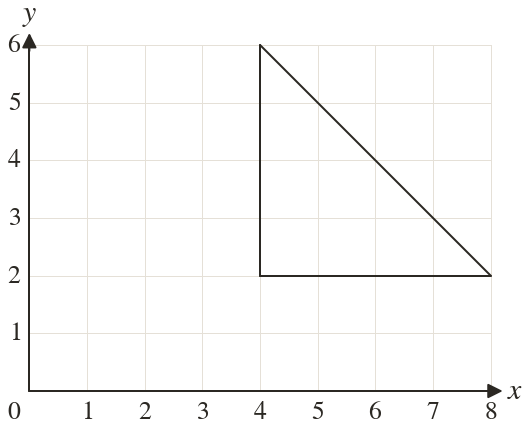
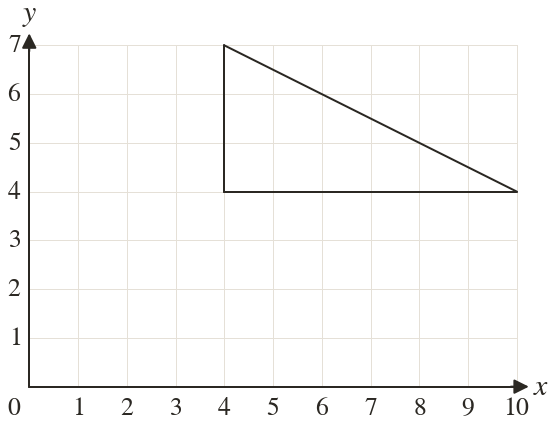
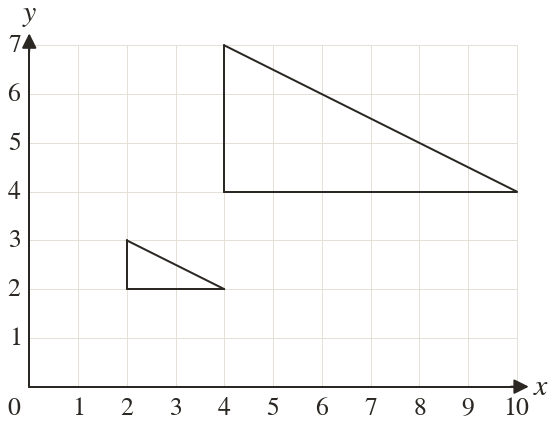

Westonbirt Maths · Transformations
Enlarging by a Fractional Scale Factor
Name: ______________________ Date: ____________
1
Enlarge the triangle by scale factor centre Write down the corners of the image.
2
Enlarge the triangle by scale factor centre Write down the corners of the image.
3
Enlarge the point by scale factor centre
4
Enlarge the point by scale factor centre
5
A rectangle cm by cm is enlarged by scale factor
Find the sides of the image.
Find the sides of the image.
Ext
Enlarge by scale factor centre Which enlargement maps the image back?


